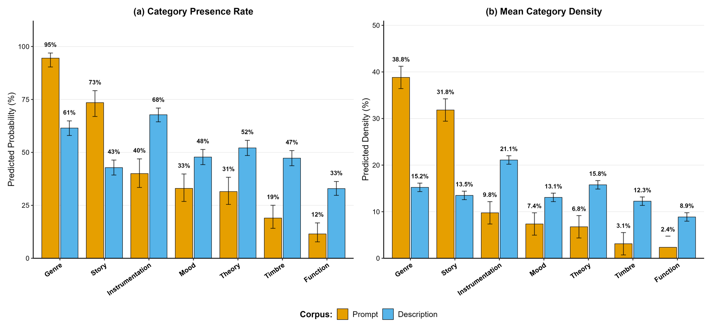
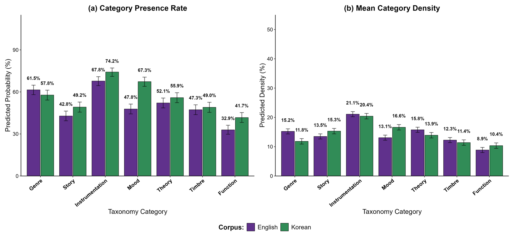

A Cross-Cultural Study of Language for AI-Generated Music
School of Music, Georgia Institute of Technology
People prompt text-to-music systems with one kind of language. Listeners describe the music they hear with another. We took real Udio prompts, played the songs they produced to English- and Korean-speaking listeners, and compared the two.
Text-to-music (TTM) generation systems allow users to create music through natural language prompts, yet it is unclear whether the descriptive language used to prompt aligns with descriptive language used to summarize or describe heard music. We pair 200 real-world Udio prompts with their generated audio and free-form descriptions collected from English- (n = 70) and Korean-speaking (n = 78) listeners, and contribute a human-derived taxonomy of musical prompting vocabulary grounded in real user data. Using this framework, alongside word- and vector-level analyses, we find a consistent structural asymmetry: prompts are dominated by Genre and Story/Narrative language. Genre terms propagate most reliably from prompt to perception, while narrative-heavy prompts are the strongest predictor of semantic misalignment. A preliminary cross-cultural comparison further suggests that description profiles vary across listener populations along narrative, functional, and affective dimensions, raising questions about whether current TTM systems, trained on aggregated English-centric corpora, can accommodate the full diversity of how people naturally express musical ideas.
Read the prompt, play the clip, then see what listeners wrote. Highlighted words show the taxonomy category GPT-5.4 assigned to each term. Rank orders all 200 songs by the mean Sentence-BERT cosine similarity between the prompt and its English descriptions (1 = closest).


Every prompt in the study with all of its descriptions. Audio for these songs is not hosted here; each one links to the original song on Udio.
Descriptions were collected in an online listening study approved by the Georgia Institute of Technology IRB (2026-65). They appear here anonymously and exactly as written, typos included. Translations of the Korean descriptions in the six cards are given for reference.
The six audio clips are the first 32 seconds of public Udio songs, credited to their creators and linked to the originals. They are shared only to demonstrate the study, for non-commercial academic purposes. Prompts come from the corpus of Casini et al. (aims_prompts).
@inproceedings{park2026prompting,
title = {From Prompting to Describing: A Cross-Cultural Study
of Language for AI-Generated Music},
author = {Park, Sangheon and Arthur, Claire},
booktitle = {Proceedings of the 27th International Society for
Music Information Retrieval Conference (ISMIR)},
year = {2026}
}